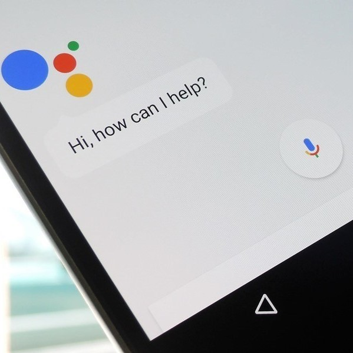

El mayordomo virtual que Google pone a tu alcance: Google Assistant

Al igual que lo hizo Amazon, Google opto por no quedarse atras introduciendo primero su asistente
en forma de software, aprovechando la gran cantidad de terminales Android existentes y posteriormente
integrandolos en altavoces, pantallas inteligentes y demas dispositivos.
Asi a partir del 2017 con la llegada de Google Home fue como entran de lleno al area de domotica,
de esta manera ademas de ofrecer servicios de comandos por voz, también integran compatibilidad con
dispositivos inteligentes para el hogar.
¿Que puede hacer Google Assistant?
Con Google Assistant es posible interactuar con dispositivos iDevices utilizando unicamente la voz, esto
permite un control rapido y sencillo, se puede solicitar al asistente apagar o encender las luces, bajar
la intensidad de las mismas, etc.
Otros de los entornos de control es de UPB Bridge, se trata de la interfaz del hardware UPB Voice Bridge,
con su ayuda se pueden controlar luces y electrodomesticos, además de activar y desactivar luces
ambientales resultando en algo similar a lo que ofrece iDevices.
En sistemas como termostatos, detectores de humo, enrutadores ,etc. Google ofrece su linea de productos Nest,
por supuesto compatibles con Assistant. Con estos dispositivos es también posible ajustar la temperatura
y encender el termostato con comandos de voz.
Además de las interfaces mencionadas anteriormente, es posible tambien controlar los sistemas de
entretenimeinto del hogar como por supuesto Chromecast, pero tambien es posible interactuar con Xbox Series
X|S y Xbox One por medio de Xbox Actio. En este último caso las opciones incluyen activar o desactivar la
consola, iniciar juegos o aplicaciones y mas.
Sin duda Google Assistant es una interesante opcion de entorno para el que quiera construir su
hogar inteligente.